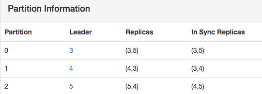

Producer
Consumer Example(old and high-level)
消费者示例, 指定要消费的topic和线程数,返回每个topic对应的 KafkaStream列表,每个线程对应一个KafkaStream. 下面的示例中只使用了一个线程,所以通过streams.get(0)获取到该线程对应的KafkaStream.然后从流中读取出消息. topicCountMap表示客户端可以同时消费多个 topic,那为什么要设置线程数呢? 因为一个topic有多个 partition分布在 多个broker节点上.即使是同一个broker,也可能有这个topic的多个 partition. 用不同的线程来隔离不同的partition.
ConsumerConfig conf = new ConsumerConfig(props);
ConsumerConnector consumer = kafka.consumer.Consumer.createJavaConsumerConnector(conf);
Map<String, Integer> topicCountMap = new HashMap<String, Integer>();
topicCountMap.put(topic, new Integer(1));
Map<String, List<KafkaStream<byte[], byte[]>>> consumerMap = consumer.createMessageStreams(topicCountMap);
List<KafkaStream<byte[], byte[]>> streams = consumerMap.get(topic);
KafkaStream<byte[], byte[]> stream = streams.get(0);
ConsumerIterator<byte[], byte[]> it = stream.iterator();
while (it.hasNext()){
System.out.println("message: " + new String(it.next().message()));
}
ConsumerConnector
Consumer定义在 ConsumerConnector接口同一个文件中. 它默认创建的ConsumerConnector是基于 ZK的 ZookeeperConsumerConnector
object Consumer extends Logging {
def createJavaConsumerConnector(config: ConsumerConfig): kafka.javaapi.consumer.ConsumerConnector = {
val consumerConnect = new kafka.javaapi.consumer.ZookeeperConsumerConnector(config)
consumerConnect
}
}
ConsumerConnector主要有创建消息流(createMessageStreams)和提交offset(commitOffsets)两种方法. Consumer会根据消息流消费数据, 并且定时提交offset.由客户端自己保存offset是 kafka采用 pull拉取消息的一个附带工作.
trait ConsumerConnector {
def createMessageStreams(topicCountMap: Map[String,Int]): Map[String, List[KafkaStream[Array[Byte],Array[Byte]]]]
def createMessageStreams[K,V](topicCountMap: Map[String,Int], keyDecoder: Decoder[K], valueDecoder: Decoder[V]) : Map[String,List[KafkaStream[K,V]]]
def createMessageStreamsByFilter[K,V](topicFilter: TopicFilter, numStreams: Int = 1, keyDecoder: Decoder[K] = new DefaultDecoder(), valueDecoder: Decoder[V] = new DefaultDecoder()) : Seq[KafkaStream[K,V]]
def commitOffsets(retryOnFailure: Boolean)
def commitOffsets(offsetsToCommit: immutable.Map[TopicAndPartition, OffsetAndMetadata], retryOnFailure: Boolean)
def setConsumerRebalanceListener(listener: ConsumerRebalanceListener)
def shutdown()
}
ZookeeperConsumerConnector
一个Consumer会创建一个 ZookeeperConsumerConnector,代表一个消费者进程.
- fetcher: 消费者获取数据, 使用ConsumerFetcherManager fetcher线程抓取数据
- zkUtils: 消费者要和ZK通信, 除了注册自己,还有其他信息也会写到ZK中
- topicThreadIdAndQueues: 消费者会指定自己消费哪些topic,并指定线程数, 所以topicThreadId都对应一个队列
- messageStreamCreated: 消费者会创建消息流, 每个队列都对应一个消息流
- offsetsChannel: offset可以存储在 ZK或者 kafka中,如果存在kafka里,像其他请求一样,需要和Broker通信
- 还有其他几个Listener监听器,分别用于topicPartition的更新,负载均衡,消费者重新负载等
private[kafka] class ZookeeperConsumerConnector(val config: ConsumerConfig, val enableFetcher: Boolean)
extends ConsumerConnector with Logging with KafkaMetricsGroup {
private var fetcher: Option[ConsumerFetcherManager] = None
private var zkUtils: ZkUtils = null
private var topicRegistry = new Pool[String, Pool[Int, PartitionTopicInfo]]
private val checkpointedZkOffsets = new Pool[TopicAndPartition, Long]
private val topicThreadIdAndQueues = new Pool[(String, ConsumerThreadId), BlockingQueue[FetchedDataChunk]]
private val scheduler = new KafkaScheduler(threads = 1, threadNamePrefix = "kafka-consumer-scheduler-")
private val messageStreamCreated = new AtomicBoolean(false)
private var offsetsChannel: BlockingChannel = null
private var sessionExpirationListener: ZKSessionExpireListener = null
private var topicPartitionChangeListener: ZKTopicPartitionChangeListener = null
private var loadBalancerListener: ZKRebalancerListener = null
private var wildcardTopicWatcher: ZookeeperTopicEventWatcher = null
private var consumerRebalanceListener: ConsumerRebalanceListener = null
connectZk() // ① 创建ZkUtils,会创建对应的ZkConnection和ZkClient
createFetcher() // ② 创建ConsumerFetcherManager,消费者fetcher线程
ensureOffsetManagerConnected() // ③ 确保连接上OffsetManager.
if (config.autoCommitEnable) { // ④ 启动定时提交offset线程
scheduler.startup
scheduler.schedule("kafka-consumer-autocommit", autoCommit, delay = config.autoCommitIntervalMs, period = config.autoCommitIntervalMs, unit = TimeUnit.MILLISECONDS)
}
}
zk and broker
- ① /brokers ->> topics和 ids: 集群中所有的topics,以及所有的brokers.
- ② /brokers/ids/broker_id -> 主机的基本信息,包括主机地址和端口号
[zk: 192.168.47.83:2181,192.168.47.84:2181,192.168.47.86:2181(CONNECTED) 1] ls /brokers
[topics, ids]
[zk: 192.168.47.83:2181,192.168.47.84:2181,192.168.47.86:2181(CONNECTED) 2] ls /brokers/ids
[3, 5, 4]
[zk: 192.168.47.83:2181,192.168.47.84:2181,192.168.47.86:2181(CONNECTED) 4] get /brokers/ids/3
{"jmx_port":10055,"timestamp":"1453380999577","host":"192.168.48.153","version":1,"port":9092}
- ③ /brokers/topics/topic_name -> topic的每个 partition,以及分配的replicas(AR)
- ④ /brokers/topics/topic_name/partitions/partition_id/state -> 这个partition的 leader,isr
[zk: 192.168.47.83:2181,192.168.47.84:2181,192.168.47.86:2181(CONNECTED) 17] get /brokers/topics/topic1
{"version":1,"partitions":{"2":[5,4],"1":[4,3],"0":[3,5]}} ⬅️
[zk: 192.168.47.83:2181,192.168.47.84:2181,192.168.47.86:2181(CONNECTED) 12] ls /brokers/topics/topic1/partitions
[2, 1, 0]
[zk: 192.168.47.83:2181,192.168.47.84:2181,192.168.47.86:2181(CONNECTED) 13] ls /brokers/topics/topic1/partitions/0
[state]
[zk: 192.168.47.83:2181,192.168.47.84:2181,192.168.47.86:2181(CONNECTED) 15] get /brokers/topics/topic1/partitions/0/state
{"controller_epoch":1775,"leader":3,"version":1,"leader_epoch":145,"isr":[3,5]}

上图是kafka manager中某个 topic的 PartitionInfo, 集群只有3个节点,这个topic有3个partition,2个副本.
② Broker node registry
/brokers/ids/0 --> { "host" : "host:port", "topics" : {"topic1": ["partition1" ... "partitionN"], ..., "topicN": ["partition1" ... "partitionN"] } }
每个Broker节点在自己启动的时候,会在/brokers下创建一个逻辑节点. 内容包括了Broker的主机和端口, Broker服务的所有 topic, 以及分配到当前Broker的这个 topic的 partition列表(并不是topic的全部 partition,会将所有partition分布在不同的 brokers).
A consumer subscribes to event changes of the broker node registry. 当Broker挂掉的时候,在这个Broker上的所有 Partition都丢失了,而Partition是给消费者服务的. 所以Broker挂掉后在做迁移的时候,会将其上的Partition转移到其他 Broker上,因此消费者要消费的Partition也跟着变化.
③ Broker topic registry
/brokers/topics/topic1 -> {"version":1,"partitions":{"2":[5,4],"1":[4,3],"0":[3,5]}}
虽然topic是在/brokers下,但是这个topic的信息是全局的.在创建topic的时候,这个topic的每个 partition的编号以及 replicas. 具体每个partition的 Leader以及 isr信息则是在/brokers/topics/topic_name/partitions/partition_id/state
zk and consumer
Consumer id registry: /consumers/[group_id]/ids/[consumer_id] -> topic1,...topicN
每个消费者会将它的id注册为临时 znode并且将它所消费的 topic设置为 znode的值,当客户端(消费者)退出时,znode(consumer_id)会被删除.
A consumer subscribes to event changes of the consumer id registry within its group. 每个consumer会订阅它所在的消费组中关于 consumer_id注册的更新事件. 为什么要注册呢,因为Kafka只会将一条消息发送到一个消费组中唯一的一个消费者. 如果某个消费者挂了,它要把本来发给挂的消费者的消费转给这个消费组中其他的消费者.同理,有新消费者加入消费组时,也会进行负载均衡.
Partition owner registry: /consumers/[group_id]/owner/[topic]/[broker_id-partition_id] --> consumer_node_id
在消费时,每个topic的 partition只能被一个消费者组中的唯一的一个消费者消费.在每次重新负载的时候,这个映射策略就会重新构建.
Consumer offset tracking: /consumers/[group_id]/offsets/[topic]/[broker_id-partition_id] --> offset_counter_value
每个消费者都要跟踪自己消费的每个 Partition最近的 offset.表示自己读取到Partition的最新位置. 由于一个Partition只能被消费组中的一个消费者消费,所以offset是以消费组为级别的,而不是消费者. 因为如果原来的消费者挂了后,应当将这个Partition交给同一个消费组中别的消费者,而此时offset是没有变化的. 一个partition可以被不同的消费者组中的不同消费者消费，所以不同的消费者组必须维护他们各自对该partition消费的最新的 offset
init
在创建ZookeeperConsumerConnector时,有几个初始化方法需要事先执行.
- 因为消费者要和ZK通信,所以connectZk会确保连接上 ZooKeeper
- 消费者要消费数据,需要有抓取线程,所有的抓取线程交给ConsumerFetcherManager统一管理
- 由消费者客户端自己保存offset,而消费者会消费多个topic的多个 partition.
- 类似多个数据抓取线程有管理类,多个partition的 offset管理类 OffsetManager是一个 GroupCoordinator
- 定时提交线程会使用OffsetManager建立的通道定时提交 offset到 zk或者 kafka.
AbstractFetcherManager
每个消费者都有自己的ConsumerFetcherManager.fetch动作不仅只有消费者有,Partition的副本也会拉取 Leader的数据. createFetcherThread抽象方法对于 Consumer和 Replica会分别创建 ConsumerFetcherThread和 ReplicaFetcherThread.
由于消费者可以消费多个topic的多个 partition.每个TopicPartition组合都会有一个 fetcherId. 所以fetcherThreadMap的 key实际上在由(broker_id, topic_id, partition_id)组成的. 针对每个source broker的每个 partition都会有拉取线程,即拉取是针对partition级别拉取数据的.
abstract class AbstractFetcherManager(protected val name: String, clientId: String, numFetchers: Int = 1) {
// map of (source broker_id, fetcher_id per source broker) => fetcher
private val fetcherThreadMap = new mutable.HashMap[BrokerAndFetcherId, AbstractFetcherThread]
}
case class BrokerAndFetcherId(broker: BrokerEndPoint, fetcherId: Int)
case class BrokerAndInitialOffset(broker: BrokerEndPoint, initOffset: Long)
所以BrokerAndFetcherId可以表示 Broker上某个 topic的 PartitionId, 而BrokerAndInitialOffset只是 Broker级别的 offset. addFetcherForPartitions的参数中 BrokerAndInitialOffset是和 TopicAndPartition有关的,即Partition的 offset. 为Partition添加 Fetcher是为 Partition创建 Fetcher线程. 因为Fetcher线程是用来抓取 Partition的消息.
// to be defined in subclass to create a specific fetcher
def createFetcherThread(fetcherId: Int, sourceBroker: BrokerEndPoint): AbstractFetcherThread
def addFetcherForPartitions(partitionAndOffsets: Map[TopicAndPartition, BrokerAndInitialOffset]) {
// 根据broker-topic-partition分组. 所以相同partition的只会有一个 fetcher线程
val partitionsPerFetcher = partitionAndOffsets.groupBy{ case(topicAndPartition, brokerAndInitialOffset) =>
BrokerAndFetcherId(brokerAndInitialOffset.broker, getFetcherId(topicAndPartition.topic, topicAndPartition.partition))}
// 分组之后的value仍然不变,还是partitionAndOffsets,但是相同的partition的多个 partitionAndOffsets都聚合在一起了
for ((brokerAndFetcherId, partitionAndOffsets) <- partitionsPerFetcher) {
// 在这里想要为每个fetcherId创建拉取线程的. 如果在缓存中直接返回,否则创建一个新的拉取线程
var fetcherThread: AbstractFetcherThread = null
fetcherThreadMap.get(brokerAndFetcherId) match {
case Some(f) => fetcherThread = f
case None =>
fetcherThread = createFetcherThread(brokerAndFetcherId.fetcherId, brokerAndFetcherId.broker)
fetcherThreadMap.put(brokerAndFetcherId, fetcherThread)
fetcherThread.start // 启动刚刚创建的拉取线程
}
// 由于partitionAndOffsets现在已经是在同一个 partition里. 取得所有partition对应的 offset
fetcherThreadMap(brokerAndFetcherId).addPartitions(partitionAndOffsets.map {
case (topicAndPartition, brokerAndInitOffset) => topicAndPartition -> brokerAndInitOffset.initOffset
})
}
}
AbstractFetcherThread addPartitions
Consumer和 Replica的 FetcherManager都会负责将自己要抓取的 partitionAndOffsets传给对应的 Fetcher线程.
AbstractFetcherManager.addFetcherForPartitions(Map<TopicAndPartition, BrokerAndInitialOffset>) (kafka.server)
|-- LeaderFinderThread in ConsumerFetcherManager.doWork() (kafka.consumer)
|-- ReplicaManager.makeFollowers(int, int, Map<Partition, PartitionState>, int, Map<TopicPartition, Object>, MetadataCache) (kafka.server)
抓取线程也是用partitionMap缓存来保存每个 TopicAndPartition的抓取状态.即管理者负责线程相关,而线程负责状态相关. Partition的状态就是 offset信息.但是拉取状态并不是实时更新的,PartitionFetchState还包括了 isActive表示是否延迟. 对一个Partition延迟,判断isActive状态后,用延迟时间封装到DelayedItem. 一般出错的拉取会被延迟back-off毫秒.
// Abstract class for fetching data from multiple partitions from the same broker.
abstract class AbstractFetcherThread(name: String, clientId: String, sourceBroker: BrokerEndPoint, fetchBackOffMs: Int = 0, isInterruptible: Boolean = true) extends ShutdownableThread(name, isInterruptible) {
private val partitionMap = new mutable.HashMap[TopicAndPartition, PartitionFetchState] // a (topic, partition) -> partitionFetchState map
def addPartitions(partitionAndOffsets: Map[TopicAndPartition, Long]) {
partitionMapLock.lockInterruptibly()
try {
for ((topicAndPartition, offset) <- partitionAndOffsets) {
// If the partitionMap already has the topic/partition, then do not update the map with the old offset
if (!partitionMap.contains(topicAndPartition))
partitionMap.put(topicAndPartition,
if (PartitionTopicInfo.isOffsetInvalid(offset)) new PartitionFetchState(handleOffsetOutOfRange(topicAndPartition))
else new PartitionFetchState(offset)
)}
partitionMapCond.signalAll()
} finally partitionMapLock.unlock()
}
FetchRequest & PartitionData
拉取请求指定要拉取哪个TopicAndPartition(offset来自于 PartitionFetchState), PartitionData返回要拉取的消息集.
type REQ <: FetchRequest //拉取请求的子类
type PD <: PartitionData //Partition数据,即拉取结果
trait FetchRequest { //定义了拉取接口
def isEmpty: Boolean
def offset(topicAndPartition: TopicAndPartition): Long
}
trait PartitionData {
def errorCode: Short
def exception: Option[Throwable]
def toByteBufferMessageSet: ByteBufferMessageSet
def highWatermark: Long
}
FetchRequest和PartitionData也有Consumer和Replica之分. ConsumerFetcherThread中的方法交给了underlying(类似于装饰模式).
object ConsumerFetcherThread {
class FetchRequest(val underlying: kafka.api.FetchRequest) extends AbstractFetcherThread.FetchRequest {
def isEmpty: Boolean = underlying.requestInfo.isEmpty
def offset(topicAndPartition: TopicAndPartition): Long = underlying.requestInfo(topicAndPartition).offset
}
class PartitionData(val underlying: FetchResponsePartitionData) extends AbstractFetcherThread.PartitionData {
def errorCode: Short = underlying.error
def toByteBufferMessageSet: ByteBufferMessageSet = underlying.messages.asInstanceOf[ByteBufferMessageSet]
def highWatermark: Long = underlying.hw
def exception: Option[Throwable] = if (errorCode == ErrorMapping.NoError) None else Some(ErrorMapping.exceptionFor(errorCode))
}
}
来自于kafka.api的 FetchRequest才是真正面向 KafkaApis的请求.PartitionFetchInfo除了 offset还有 fetchSize. RequestOrResponse是作为 KafkaApis中数据传递的介质接口. 参数requestId表示了请求的类型(PRODUCE,FETCH等)
case class PartitionFetchInfo(offset: Long, fetchSize: Int)
case class FetchRequest(versionId: Short = FetchRequest.CurrentVersion,correlationId: Int = FetchRequest.DefaultCorrelationId,
clientId: String = ConsumerConfig.DefaultClientId,replicaId: Int = Request.OrdinaryConsumerId,
maxWait: Int = FetchRequest.DefaultMaxWait,minBytes: Int = FetchRequest.DefaultMinBytes,
requestInfo: Map[TopicAndPartition, PartitionFetchInfo])
extends RequestOrResponse(Some(ApiKeys.FETCH.id))
ConsumerFetcherThread.buildFetchRequest
AbstractFetcherThread的 doWork会抽象出 buildFetchRequest,ConsumerFetcherThread会使用 FetchRequestBuilder build出来的是和 kafka.api.FetchRequestBuilder相同文件下的 kafka.api.FetchRequest,作为underlying.
注意其中Partition的 offset最开始源自于 AbstractFetcherManager.addFetcherForPartitions的 BrokerAndInitialOffset 然后获取brokerAndInitOffset.initOffset作为 AbstractFetcherThread.addPartitions方法参数 Map的 value, 并转化为PartitionFetchState加入到 partitionMap中,在 buildFetchRequest又转化为了 PartitionFetchInfo.
注意:上面只是一种来源,拉取线程在拉取数据之后,会更新这批数据最后一条消息的下一个offset作为 partitionMap中 Partition的最新 PartitionFetchState,所以下一次调用buildFetchRequest构建新的 FetchRequest时,PartitionFetchInfo的 offset也是最新的.
class ConsumerFetcherThread(...){
private val fetchRequestBuilder = new FetchRequestBuilder().
clientId(clientId).replicaId(Request.OrdinaryConsumerId).maxWait(config.fetchWaitMaxMs).
minBytes(config.fetchMinBytes).requestVersion(kafka.api.FetchRequest.CurrentVersion)
// partitionMap来自于 AbstractFetcherThread.addPartitions或者 delayPartitions
protected def buildFetchRequest(partitionMap: collection.Map[TopicAndPartition, PartitionFetchState]): FetchRequest = {
partitionMap.foreach { case ((topicAndPartition, partitionFetchState)) =>
if (partitionFetchState.isActive)
fetchRequestBuilder.addFetch(topicAndPartition.topic, topicAndPartition.partition, partitionFetchState.offset, fetchSize)
}
new FetchRequest(fetchRequestBuilder.build()) //构造器模式,在最后才进行build
}
}
class FetchRequestBuilder() {
private val requestMap = new collection.mutable.HashMap[TopicAndPartition, PartitionFetchInfo]
def addFetch(topic: String, partition: Int, offset: Long, fetchSize: Int) = {
requestMap.put(TopicAndPartition(topic, partition), PartitionFetchInfo(offset, fetchSize))
this
}
def build() = {
val fetchRequest = FetchRequest(versionId, correlationId.getAndIncrement, clientId, replicaId, maxWait, minBytes, requestMap.toMap)
requestMap.clear()
fetchRequest
}
}
AbstractFetcherThread doWork
AbstractFetcherThread定义了多个回调方法,它的doWork方法会构建 FetchRequest,然后处理拉取请求. 因为拉取分为Consumer和 Replica,所以将具体的拉取动作要留给子类自己实现.
注意:下面的partitionMap在 addPartitions中被添加.在doWork拉取到数据后被更新 offset,表示最新拉取的位置
abstract class AbstractFetcherThread(..){
private val partitionMap = new mutable.HashMap[TopicAndPartition, PartitionFetchState] // a (topic, partition) -> partitionFetchState map
// ① 根据partitionMap构建FetchRequest请求
protected def buildFetchRequest(partitionMap: Map[TopicAndPartition, PartitionFetchState]): REQ
// ② 根据抓取请求向Broker拉取消息
protected def fetch(fetchRequest: REQ): Map[TopicAndPartition, PD]
// ③ process fetched data 处理抓取到的数据
def processPartitionData(topicAndPartition: TopicAndPartition, fetchOffset: Long, partitionData: PD)
// ④ handle a partition whose offset is out of range and return a new fetch offset 处理超出范围的offset
def handleOffsetOutOfRange(topicAndPartition: TopicAndPartition): Long
// ⑤ deal with partitions with errors, potentially due to leadership changes 处理出错的partitions
def handlePartitionsWithErrors(partitions: Iterable[TopicAndPartition])
// 拉取线程工作, doWork是被循环调用的,所以一旦partiionMap发生了变化(比如拉取一次之后),新的FetchRequest中的offset也发生了变化
override def doWork() {
val fetchRequest = inLock(partitionMapLock) {
val fetchRequest = buildFetchRequest(partitionMap)
// 如果没有拉取请求, 则延迟back-off毫秒后继续发送请求
if (fetchRequest.isEmpty) partitionMapCond.await(fetchBackOffMs, TimeUnit.MILLISECONDS)
fetchRequest
}
if (!fetchRequest.isEmpty) processFetchRequest(fetchRequest)
}
private def processFetchRequest(fetchRequest: REQ) {
val partitionsWithError = new mutable.HashSet[TopicAndPartition]
var responseData: Map[TopicAndPartition, PD] = Map.empty
responseData = fetch(fetchRequest)
responseData.foreach { case (topicAndPartition, partitionData) =>
// 响应结果:TopicAndPartition->PartitionData,根据TopicAndPartition,就能从partitionMap中的 PartitionFetchState
partitionMap.get(topicAndPartition).foreach(currentPartitionFetchState =>
// we append to the log if the current offset is defined and it is the same as the offset requested during fetch
// fetchRequest是由 partitionMap通过 buildFetchRequest构建出来的,而currentPartitionFetchState也来自于 partitionMap
if (fetchRequest.offset(topicAndPartition) == currentPartitionFetchState.offset) {
Errors.forCode(partitionData.errorCode) match {
case Errors.NONE =>
// responseData的 PartitionData,包含了拉取的消息内容
val messages = partitionData.toByteBufferMessageSet
// 最后一条消息的offset+1,为新的offset,即下一次要拉取的 offset的开始位置从 newOffset开始
val newOffset = messages.shallowIterator.toSeq.lastOption match { //正常的迭代器迭代之后消息就没有了,使用shallow拷贝,消息仍然存在
case Some(m: MessageAndOffset) => m.nextOffset
case None => currentPartitionFetchState.offset
}
// 更新partitionMap中的 Partition拉取状态, 这样下次请求时,因为partitionMap内容更新了,重新构造的buildFetchRequest的 offset也变化了
partitionMap.put(topicAndPartition, new PartitionFetchState(newOffset))
processPartitionData(topicAndPartition, currentPartitionFetchState.offset, partitionData)
case Errors.OFFSET_OUT_OF_RANGE => partitionMap.put(topicAndPartition, new PartitionFetchState(handleOffsetOutOfRange(topicAndPartition)))
case _ => if (isRunning.get) partitionsWithError += topicAndPartition
}
})
}
if (partitionsWithError.nonEmpty) {
handlePartitionsWithErrors(partitionsWithError)
}
}
}
基本上我们把关于Fetcher的 Manager和 Thread的抽象类都分析完了,现在看看Consumer是如何 Fetch消息的.
createMessageStreams
由ConsumerConnector创建消息流,需要指定解码器,因为要将日志反序列化(生产者写消息时对消息序列化到日志文件). consume并不真正的消费数据,只是初始化存放数据的queue.真正消费数据的是对该 queue进行 shallow iterator. 在kafka的运行过程中,会有其他的线程将数据放入 partition对应的 queue中. 而queue是用于 KafkaStream的. 一旦数据添加到queue后,KafkaStream的阻塞队列就有数据了,消费者就可以从队列中消费消息.
def createMessageStreams[K,V](topicCountMap: Map[String,Int], keyDecoder: Decoder[K], valueDecoder: Decoder[V]) : Map[String, List[KafkaStream[K,V]]] = {
consume(topicCountMap, keyDecoder, valueDecoder)
}
def consume[K, V](topicCountMap: scala.collection.Map[String,Int], keyDecoder: Decoder[K], valueDecoder: Decoder[V]) : Map[String,List[KafkaStream[K,V]]] = {
val topicCount = TopicCount.constructTopicCount(consumerIdString, topicCountMap)
val topicThreadIds = topicCount.getConsumerThreadIdsPerTopic
// make a list of (queue,stream) pairs, one pair for each threadId 只是准备了队列和流,数据什么时候填充呢?
val queuesAndStreams = topicThreadIds.values.map(threadIdSet =>
threadIdSet.map(_ => {
val queue = new LinkedBlockingQueue[FetchedDataChunk](config.queuedMaxMessages)
val stream = new KafkaStream[K,V](queue, config.consumerTimeoutMs, keyDecoder, valueDecoder, config.clientId)
(queue, stream)
})
).flatten.toList //threadIdSet是个集合,外层的topicThreadIds.values也是集合,所以用flatten压扁为 queue-stream对
val dirs = new ZKGroupDirs(config.groupId) // /consumers/[group_id]
registerConsumerInZK(dirs, consumerIdString, topicCount) // /consumers/[group_id]/ids/[consumer_id]
reinitializeConsumer(topicCount, queuesAndStreams) // 重新初始化消费者 ⬅️
// 返回KafkaStream, 每个Topic都对应了多个 KafkaStream. 数量和topicCount中的 count一样
loadBalancerListener.kafkaMessageAndMetadataStreams.asInstanceOf[Map[String, List[KafkaStream[K,V]]]]
}
consumerIdString会返回当前 Consumer在哪个 ConsumerGroup的编号.每个consumer在消费组中的编号都是唯一的. 一个消费者,对一个topic可以使用多个线程一起消费(一个进程可以有多个线程). 当然一个消费者也可以消费多个topic.
def makeConsumerThreadIdsPerTopic(consumerIdString: String, topicCountMap: Map[String, Int]) = {
val consumerThreadIdsPerTopicMap = new mutable.HashMap[String, Set[ConsumerThreadId]]()
for ((topic, nConsumers) <- topicCountMap) { // 每个topic有几个消费者线程
val consumerSet = new mutable.HashSet[ConsumerThreadId] // 一个消费者线程对应一个ConsumerThreadId
for (i <- 0 until nConsumers)
consumerSet += ConsumerThreadId(consumerIdString, i)
consumerThreadIdsPerTopicMap.put(topic, consumerSet) // 每个topic都有多个 Consumer线程,但是只有一个消费者进程
}
consumerThreadIdsPerTopicMap // topic到消费者线程集合的映射
}
假设消费者C1声明了topic1:2, topic2:3. topicThreadIds=consumerThreadIdsPerTopicMap. topicThreadIds.values = [ (C1_1,C1_2), (C1_1,C1_2,C1_3)]一共有5个线程,queuesAndStreams也有5个元素.
consumerThreadIdsPerTopicMap = {
topic1: [C1_1, C1_2],
topic2: [C1_1, C1_2, C1_3]
}
topicThreadIds.values = [
[C1_1, C1_2],
[C1_1, C1_2, C1_3]
]
threadIdSet循环[C1_1, C1_2]时, 生成两个queue->stream pair.
threadIdSet循环[C1_1, C1_2, C1_3]时, 生成三个queue->stream pair.
queuesAndStreams = [
(LinkedBlockingQueue_1,KafkaStream_1), //topic1:C1_1
(LinkedBlockingQueue_2,KafkaStream_2), //topic1:C1_2
(LinkedBlockingQueue_3,KafkaStream_3), //topic2:C1_1
(LinkedBlockingQueue_4,KafkaStream_4), //topic2:C1_2
(LinkedBlockingQueue_5,KafkaStream_5), //topic2:C1_3
]
对于消费者而言,它只要指定要消费的topic和线程数量就可以了,其他具体这个topic分成多少个 partition, 以及topic-partition是分布是哪个 broker上,对于客户端而言都是透明的. 客户端关注的是我的每个线程都对应了一个队列,每个队列都是一个消息流就可以了. 在Producer以及前面分析的 Fetcher,都是以Broker-Topic-Partition为级别的. AbstractFetcherManager的 fetcherThreadMap就是以 brokerAndFetcherId来创建拉取线程的. 而消费者是通过拉取线程才有数据可以消费的,所以客户端的每个线程实际上也是针对Partition级别的.
registerConsumerInZK
消费者需要向ZK注册一个临时节点,节点内容为订阅的topic.
private def registerConsumerInZK(dirs: ZKGroupDirs, consumerIdString: String, topicCount: TopicCount) {
val consumerRegistrationInfo = Json.encode(Map("version" -> 1, "subscription" -> topicCount.getTopicCountMap, "pattern" -> topicCount.pattern, "timestamp" -> timestamp))
val zkWatchedEphemeral = new ZKCheckedEphemeral(dirs.consumerRegistryDir + "/" + consumerIdString, consumerRegistrationInfo, zkUtils.zkConnection.getZookeeper, false)
zkWatchedEphemeral.create()
}
问题:什么时候这个节点会被删除掉呢? Consumer进程挂掉时,或者Session失效时删除临时节点. 重连时会重新创建.
reinitializeConsumer listener
当前Consumer在 ZK注册之后,需要重新初始化Consumer. 对于全新的消费者,注册多个监听器,在zk的对应节点的注册事件发生时,会回调监听器的方法.
- 将topic对应的消费者线程 id及对应的 LinkedBlockingQueue放入 topicThreadIdAndQueues中,LinkedBlockingQueue是真正存放数据的 queue
- ① 注册sessionExpirationListener,监听状态变化事件.在session失效重新创建 session时调用
- ② 向/consumers/group/ids注册 Child变更事件的 loadBalancerListener,当消费组下的消费者发生变化时调用
- ③ 向/brokers/topics/topic注册 Data变更事件的 topicPartitionChangeListener,在topic数据发生变化时调用
- 显式调用loadBalancerListener.syncedRebalance(), 会调用 rebalance方法进行 consumer的初始化工作
private def reinitializeConsumer[K,V](topicCount: TopicCount, queuesAndStreams: List[(LinkedBlockingQueue[FetchedDataChunk],KafkaStream[K,V])]) {
val dirs = new ZKGroupDirs(config.groupId)
// ② listener to consumer and partition changes
if (loadBalancerListener == null) {
val topicStreamsMap = new mutable.HashMap[String,List[KafkaStream[K,V]]]
loadBalancerListener = new ZKRebalancerListener(config.groupId, consumerIdString, topicStreamsMap.asInstanceOf[scala.collection.mutable.Map[String, List[KafkaStream[_,_]]]])
}
// ① create listener for session expired event if not exist yet
if (sessionExpirationListener == null) sessionExpirationListener = new ZKSessionExpireListener(dirs, consumerIdString, topicCount, loadBalancerListener)
// ③ create listener for topic partition change event if not exist yet
if (topicPartitionChangeListener == null) topicPartitionChangeListener = new ZKTopicPartitionChangeListener(loadBalancerListener)
// listener to consumer and partition changes
zkUtils.zkClient.subscribeStateChanges(sessionExpirationListener)
zkUtils.zkClient.subscribeChildChanges(dirs.consumerRegistryDir, loadBalancerListener)
// register on broker partition path changes.
topicStreamsMap.foreach { topicAndStreams =>
zkUtils.zkClient.subscribeDataChanges(BrokerTopicsPath + "/" + topicAndStreams._1, topicPartitionChangeListener)
}
// explicitly trigger load balancing for this consumer
loadBalancerListener.syncedRebalance()
}
ZKRebalancerListener传入 ZKSessionExpireListener和 ZKTopicPartitionChangeListener.它们都会使用 ZKRebalancerListener完成自己的工作.
ZKSessionExpireListener
当Session失效时,新的会话建立时,立即进行rebalance操作.
class ZKSessionExpireListener(val dirs: ZKGroupDirs, val consumerIdString: String, val topicCount: TopicCount, val loadBalancerListener: ZKRebalancerListener)
extends IZkStateListener {
def handleNewSession() {
loadBalancerListener.resetState()
registerConsumerInZK(dirs, consumerIdString, topicCount)
loadBalancerListener.syncedRebalance()
}
}
ZKTopicPartitionChangeListener
当topic的数据变化时,通过触发的方式启动rebalance操作.
class ZKTopicPartitionChangeListener(val loadBalancerListener: ZKRebalancerListener)
extends IZkDataListener {
def handleDataChange(dataPath : String, data: Object) {
loadBalancerListener.rebalanceEventTriggered()
}
}
ZKRebalancerListener watcher
class ZKRebalancerListener(val group: String, val consumerIdString: String,
val kafkaMessageAndMetadataStreams: mutable.Map[String,List[KafkaStream[_,_]]])
extends IZkChildListener {
private var isWatcherTriggered = false
private val lock = new ReentrantLock
private val cond = lock.newCondition()
private val watcherExecutorThread = new Thread(consumerIdString + "_watcher_executor") {
override def run() {
var doRebalance = false
while (!isShuttingDown.get) {
lock.lock()
try {
// 如果isWatcherTriggered=false,则不会触发syncedRebalance. 等待1秒后,继续判断
if (!isWatcherTriggered)
cond.await(1000, TimeUnit.MILLISECONDS) // wake up periodically so that it can check the shutdown flag
} finally {
// 不管isWatcherTriggered值是多少,在每次循环时,都会执行. 如果isWatcherTriggered=true,则会执行syncedRebalance
doRebalance = isWatcherTriggered
// 重新设置isWatcherTriggered=false, 因为其他线程触发一次后就失效了,想要再次触发,必须再次设置isWatcherTriggered=true
isWatcherTriggered = false
lock.unlock()
}
if (doRebalance) syncedRebalance // 只有每次rebalanceEventTriggered时,才会调用一次syncedRebalance
}
}
}
watcherExecutorThread.start()
// 触发rebalance开始进行, 修改isWatcherTriggered标志位,触发cond条件运行
def rebalanceEventTriggered() {
inLock(lock) {
isWatcherTriggered = true
cond.signalAll()
}
}
reinitializeConsumer的 topicStreamsMap是从(topic,thread)->(queue,stream)根据topic获取 stream得来的.
val topicStreamsMap = loadBalancerListener.kafkaMessageAndMetadataStreams
// map of {topic -> Set(thread-1, thread-2, ...)}
val consumerThreadIdsPerTopic: Map[String, Set[ConsumerThreadId]] = topicCount.getConsumerThreadIdsPerTopic
// list of (Queue, KafkaStreams): (queue1,stream1),(queue2,stream2),...
val allQueuesAndStreams = queuesAndStreams
// (topic,thread-1), (topic,thread-2), ...
val topicThreadIds = consumerThreadIdsPerTopic.map {
case(topic, threadIds) => threadIds.map((topic, _)) //一个topic有多个线程:threadIds,将threadIds中每个threadId都添加上topic标识
}.flatten
// (topic,thread-1), (queue1, stream1)
// (topic,thread-2), (queue2, stream2)
val threadQueueStreamPairs = topicThreadIds.zip(allQueuesAndStreams)
threadQueueStreamPairs.foreach(e => {
val topicThreadId = e._1 // (topic,threadId)
val q = e._2._1 // Queue
topicThreadIdAndQueues.put(topicThreadId, q)
})
val groupedByTopic = threadQueueStreamPairs.groupBy(_._1._1)
// 根据topic分组之后, groupedByTopic的每个元素的_1为topic,_2为属于这个topic的所有(topic,thread-1), (queue1, stream1)形式的列表
groupedByTopic.foreach(e => {
val topic = e._1
// e._2是一个List[((topic,thread),(queue,stream))],下面收集这个topic的所有stream
val streams = e._2.map(_._2._2).toList
topicStreamsMap += (topic -> streams)
})
ZKRebalancerListener rebalance
- ① 关闭数据抓取线程，获取之前为topic设置的存放数据的 queue并清空该 queue
- ② 释放partition的 ownership,删除partition和 consumer的对应关系
- ③ 为各个partition重新分配 threadid
- 获取partition最新的 offset并重新初始化新的 PartitionTopicInfo(queue存放数据,两个offset为 partition最新的 offset)
- ④ 重新将partition对应的新的 consumer信息写入 zookeeper
- ⑤ 重新创建partition的 fetcher线程
private def rebalance(cluster: Cluster): Boolean = {
val myTopicThreadIdsMap = TopicCount.constructTopicCount(group, consumerIdString, zkUtils, config.excludeInternalTopics).getConsumerThreadIdsPerTopic
val brokers = zkUtils.getAllBrokersInCluster()
if (brokers.size == 0) {
zkUtils.zkClient.subscribeChildChanges(BrokerIdsPath, loadBalancerListener)
true
} else {
// ① 停止fetcher线程防止数据重复.如果当前调整失败了,被释放的partitions可能被其他消费者拥有.而没有先停止fetcher的话,原先的消费者仍然会和新的拥有者共同消费同一份数据.
closeFetchers(cluster, kafkaMessageAndMetadataStreams, myTopicThreadIdsMap)
// ② 释放topicRegistry中topic-partition的owner
releasePartitionOwnership(topicRegistry)
// ③ 为partition重新分配消费者....
// ④ 为partition添加consumer owner
if(reflectPartitionOwnershipDecision(partitionAssignment)) {
allTopicsOwnedPartitionsCount = partitionAssignment.size
topicRegistry = currentTopicRegistry
// ⑤ 创建拉取线程
updateFetcher(cluster)
true
}
}
}
PartitionOwnership
topicRegistry的数据结构是: topic -> (partition -> PartitionTopicInfo), 表示现有的topic注册信息. 当partition被 consumer所拥有后, 会在zk中创建 /consumers/[group_id]/owner/[topic]/[partition_id] --> consumer_node_id 释放所有partition的 ownership, 数据来源于topicRegistry的 topic-partition(消费者所属的group_id也是确定的). 所以deletePartitionOwnershipFromZK会删除 /consumers/[group_id]/owner/[topic]/[partition_id]节点. 这样partition没有了 owner,说明这个partition不会被 consumer消费了,也就相当于consumer释放了 partition.
private def releasePartitionOwnership(localTopicRegistry: Pool[String, Pool[Int, PartitionTopicInfo]])= {
for ((topic, infos) <- localTopicRegistry) {
for(partition <- infos.keys) {
deletePartitionOwnershipFromZK(topic, partition)
}
localTopicRegistry.remove(topic)
}
allTopicsOwnedPartitionsCount = 0
}
private def deletePartitionOwnershipFromZK(topic: String, partition: Int) {
val topicDirs = new ZKGroupTopicDirs(group, topic)
val znode = topicDirs.consumerOwnerDir + "/" + partition
zkUtils.deletePath(znode)
}
重建ownership. 参数partitionAssignment会指定 partition(TopicAndPartition)要分配给哪个consumer(ConsumerThreadId)消费的.
private def reflectPartitionOwnershipDecision(partitionAssignment: Map[TopicAndPartition, ConsumerThreadId]): Boolean = {
var successfullyOwnedPartitions : List[(String, Int)] = Nil
val partitionOwnershipSuccessful = partitionAssignment.map { partitionOwner =>
val topic = partitionOwner._1.topic
val partition = partitionOwner._1.partition
val consumerThreadId = partitionOwner._2
// 返回/consumers/[group_id]/owner/[topic]/[partition_id]节点路径,然后创建节点,节点内容为:consumerThreadId
val partitionOwnerPath = zkUtils.getConsumerPartitionOwnerPath(group, topic, partition)
zkUtils.createEphemeralPathExpectConflict(partitionOwnerPath, consumerThreadId.toString)
// 成功创建的节点,加入到列表中
successfullyOwnedPartitions ::= (topic, partition)
true
}
// 判断上面的创建节点操作(为consumer分配partition)是否有错误,一旦有一个有问题,就全部回滚(删除掉).只有所有成功才算成功
val hasPartitionOwnershipFailed = partitionOwnershipSuccessful.foldLeft(0)((sum, decision) => sum + (if(decision) 0 else 1))
if(hasPartitionOwnershipFailed > 0) {
successfullyOwnedPartitions.foreach(topicAndPartition => deletePartitionOwnershipFromZK(topicAndPartition._1, topicAndPartition._2))
false
} else true
}
关于consumer的注册节点出现的地方有:开始时的registerConsumerInZK,以及这里的先释放再注册.
AssignmentContext
AssignmentContext是 PartitionAssignor要为某个消费者分配的上下文.因为消费者只订阅了特定的topic,所以首先要选出topic. 每个topic都是有 partitions map, 表示这个topic有哪些 partition,以及对应的replicas.进而得到partitionsForTopic. consumersForTopic:要在当前消费者所在的消费组中,找到所有订阅了这个topic的消费者.以topic为粒度,统计所有的线程数.
class AssignmentContext(group: String, val consumerId: String, excludeInternalTopics: Boolean, zkUtils: ZkUtils) {
// 当前消费者的消费topic和消费线程, 因为指定了consumerId,所以是针对当前consumer而言
val myTopicThreadIds: collection.Map[String, collection.Set[ConsumerThreadId]] = {
val myTopicCount = TopicCount.constructTopicCount(group, consumerId, zkUtils, excludeInternalTopics)
myTopicCount.getConsumerThreadIdsPerTopic
}
// 属于某个topic的所有partitions. 当然topic是当前消费者订阅的范围内,其他topic并不关心
val partitionsForTopic: collection.Map[String, Seq[Int]] = zkUtils.getPartitionsForTopics(myTopicThreadIds.keySet.toSeq)
// 在当前消费组内,属于某个topic的所有consumers
val consumersForTopic: collection.Map[String, List[ConsumerThreadId]] = zkUtils.getConsumersPerTopic(group, excludeInternalTopics)
val consumers: Seq[String] = zkUtils.getConsumersInGroup(group).sorted
}
/brokers/topics/topic_name 记录的是 topic 的 partition分配情况. 获取 partition信息,读取的是partitions 字段(partitionMap).
def getPartitionsForTopics(topics: Seq[String]): mutable.Map[String, Seq[Int]] = {
getPartitionAssignmentForTopics(topics).map { topicAndPartitionMap =>
val topic = topicAndPartitionMap._1
val partitionMap = topicAndPartitionMap._2
(topic -> partitionMap.keys.toSeq.sortWith((s,t) => s < t))
}
}
每个消费者都可以指定消费的topic和线程数, 对于同一个消费组中多个消费者可以指定消费同一个topic或不同 topic. 获取topic的所有 consumers时,统计所有消费这个topic的消费者线程(原先以消费者,现在转换为以topic).
注意: 这里是取出当前消费组下所有消费者的所有topic,并没有过滤出属于当前消费者感兴趣的topics.
def getConsumersPerTopic(group: String, excludeInternalTopics: Boolean) : mutable.Map[String, List[ConsumerThreadId]] = {
val dirs = new ZKGroupDirs(group)
// 当前消费组下所有的consumers
val consumers = getChildrenParentMayNotExist(dirs.consumerRegistryDir)
val consumersPerTopicMap = new mutable.HashMap[String, List[ConsumerThreadId]]
for (consumer <- consumers) {
// 每个consumer都指定了 topic和 thread-count
val topicCount = TopicCount.constructTopicCount(group, consumer, this, excludeInternalTopics)
for ((topic, consumerThreadIdSet) <- topicCount.getConsumerThreadIdsPerTopic) {
// 现在是在同一个consumer里, 对同一个topic,有多个thread-id
for (consumerThreadId <- consumerThreadIdSet)
// 最后按照topic分,而不是按照consumer分,比如多个consumer都消费了同一个 topic, 则这些 consumer会加入到同一个 topic中
consumersPerTopicMap.get(topic) match {
case Some(curConsumers) => consumersPerTopicMap.put(topic, consumerThreadId :: curConsumers)
case _ => consumersPerTopicMap.put(topic, List(consumerThreadId))
}
}
}
for ((topic, consumerList) <- consumersPerTopicMap) consumersPerTopicMap.put(topic, consumerList.sortWith((s,t) => s < t))
consumersPerTopicMap
}
PartitionAssignor
将可用的partitions以及消费者线程排序, 将partitions处于线程数,表示每个线程(不是消费者数量)平均可以分到几个partition. 如果除不尽,剩余的会分给前面几个消费者线程. 比如有两个消费者,每个都是两个线程,一共有5个可用的partitions:(p0-p4). 每个消费者线程(一共四个线程)可以获取到至少一共partition(5/4=1),剩余一个(5%4=1)partition分给第一个线程. 最后的分配结果为: p0 -> C1-0, p1 -> C1-0, p2 -> C1-1, p3 -> C2-0, p4 -> C2-1
class RangeAssignor() extends PartitionAssignor with Logging {
def assign(ctx: AssignmentContext) = {
val valueFactory = (topic: String) => new mutable.HashMap[TopicAndPartition, ConsumerThreadId]
// consumerThreadId -> (TopicAndPartition -> ConsumerThreadId). 所以上面的valueFactory的参数不对哦!
val partitionAssignment = new Pool[String, mutable.Map[TopicAndPartition, ConsumerThreadId]](Some(valueFactory))
for (topic <- ctx.myTopicThreadIds.keySet) {
val curConsumers = ctx.consumersForTopic(topic) // 订阅了topic的消费者列表(4)
val curPartitions: Seq[Int] = ctx.partitionsForTopic(topic) // 属于topic的 partitions(5)
val nPartsPerConsumer = curPartitions.size / curConsumers.size // 每个线程都可以有这些个partition(1)
val nConsumersWithExtraPart = curPartitions.size % curConsumers.size // 剩余的分给前面几个(1)
for (consumerThreadId <- curConsumers) { // 每个消费者线程: C1_0,C1_1,C2_0,C2_1
val myConsumerPosition = curConsumers.indexOf(consumerThreadId) // 线程在列表中的索引: 0,1,2,3
val startPart = nPartsPerConsumer * myConsumerPosition + myConsumerPosition.min(nConsumersWithExtraPart)
val nParts = nPartsPerConsumer + (if (myConsumerPosition + 1 > nConsumersWithExtraPart) 0 else 1)
// Range-partition the sorted partitions to consumers for better locality. The first few consumers pick up an extra partition, if any.
if (nParts > 0)
for (i <- startPart until startPart + nParts) {
val partition = curPartitions(i)
// record the partition ownership decision 记录partition的 ownership决定,即把partition分配给 consumerThreadId
val assignmentForConsumer = partitionAssignment.getAndMaybePut(consumerThreadId.consumer)
assignmentForConsumer += (TopicAndPartition(topic, partition) -> consumerThreadId)
}
}
}
}
// 前面的for循环中的 consumers是和当前消费者有相同 topic的,如果消费者的topic和当前消费者不一样,则在本次assign中不会为它分配的.
// assign Map.empty for the consumers which are not associated with topic partitions 没有和partition关联的 consumer分配空的 partition.
ctx.consumers.foreach(consumerId => partitionAssignment.getAndMaybePut(consumerId))
partitionAssignment
}
}
假设有如下的消费者-订阅topic的关系.
首先找到和consumer1有相同订阅主题的消费者
对于consumer1的所有topic, 分配给有这个订阅关系的所有订阅者
PartitionAssignment -> PartitionTopicInfo
这是ZKRebalancerListener.rebalance的第三步.首先为当前消费者创建AssignmentContext上下文. 上面知道partitionAssignor.assign的返回值是所有 consumer的分配结果(虽然有些 consumer在本次中并没有分到 partition) partitionAssignment的结构是 consumerThreadId -> (TopicAndPartition -> ConsumerThreadId), 所以获取当前consumer只要传入 assignmentContext.consumerId就可以得到当前消费者的 PartitionAssignment.
// ③ 为partition重新选择 consumer
val assignmentContext = new AssignmentContext(group, consumerIdString, config.excludeInternalTopics, zkUtils)
val globalPartitionAssignment = partitionAssignor.assign(assignmentContext)
val partitionAssignment = globalPartitionAssignment.get(assignmentContext.consumerId)
val currentTopicRegistry = new Pool[String, Pool[Int, PartitionTopicInfo]](valueFactory = Some((topic: String) => new Pool[Int, PartitionTopicInfo]))
// fetch current offsets for all topic-partitions
val topicPartitions = partitionAssignment.keySet.toSeq
val offsetFetchResponseOpt = fetchOffsets(topicPartitions)
val offsetFetchResponse = offsetFetchResponseOpt.get
topicPartitions.foreach(topicAndPartition => {
val (topic, partition) = topicAndPartition.asTuple
val offset = offsetFetchResponse.requestInfo(topicAndPartition).offset
val threadId = partitionAssignment(topicAndPartition)
addPartitionTopicInfo(currentTopicRegistry, partition, topic, offset, threadId)
})
// ④ ⑤ 注册到zk上, 并创建新的fetcher线程
if(reflectPartitionOwnershipDecision(partitionAssignment)) {
topicRegistry = currentTopicRegistry // topicRegistry来自上一步的 addPartitionTopicInfo, 它会被用于updateFetcher
updateFetcher(cluster)
}
PartitionAssignment的 key是 TopicAndPartition,根据所有topicAndPartitions获取这些 partitions的 offsets. 返回值offsetFetchResponse包含了对应的 offset, 最终根据这些信息创建对应的PartitionTopicInfo. PartitionTopicInfo包含 Partition和 Topic:队列用来存放数据(topicThreadIdAndQueues在 reinitializeConsumer中放入), consumedOffset和 fetchedOffset都是来自于 offset参数,即上面offsetFetchResponse中 partition的 offset.
currentTopicRegistry这个结构也很重要: topic -> (partition -> PartitionTopicInfo) key是 topic, 正如名称所示是topic的注册信息(topicRegistry).又因为来自于fetchOffsets,所以表示的是最新当前的.
private def addPartitionTopicInfo(currentTopicRegistry: Pool[String, Pool[Int, PartitionTopicInfo]],
partition: Int, topic: String, offset: Long, consumerThreadId: ConsumerThreadId) {
val partTopicInfoMap = currentTopicRegistry.getAndMaybePut(topic)
val queue = topicThreadIdAndQueues.get((topic, consumerThreadId))
val consumedOffset = new AtomicLong(offset)
val fetchedOffset = new AtomicLong(offset)
val partTopicInfo = new PartitionTopicInfo(topic,partition,queue,consumedOffset,fetchedOffset,new AtomicInteger(config.fetchMessageMaxBytes), config.clientId)
partTopicInfoMap.put(partition, partTopicInfo)
checkpointedZkOffsets.put(TopicAndPartition(topic, partition), offset)
}
}
注意:一个threadId可以消费同一个 topic的多个 partition. 而一个threadId对应一个 queue. 所以一个queue也就可以消费多个 partition. 即对于不同的partition,可能使用同一个队列来消费. 比如消费者设置了一个线程,就只有一个队列,而partition分了两个给它,这样一个队列就要处理两个partition了.
updateFetcher & closeFetchers
这里我们看到了在ZooKeeperConsumerConnector初始化时创建的 fetcher(ConsumerFetcherManager)终于派上用场了. allPartitionInfos是分配给 Consumer的 Partition列表(但是这里还不知道Leader的,所以在 Manager中要自己寻找 Leader).
private def updateFetcher(cluster: Cluster) { // update partitions for fetcher
var allPartitionInfos : List[PartitionTopicInfo] = Nil
for (partitionInfos <- topicRegistry.values) // topicRegistry是在addPartitionTopicInfo中加到currentTopicRegistry,再被赋值给topicRegistry
for (partition <- partitionInfos.values) // PartitionTopicInfo
allPartitionInfos ::= partition
fetcher match {
case Some(f) => f.startConnections(allPartitionInfos, cluster)
}
}
创建Fetcher是为 PartitionInfos准备开始连接, 在rebalance时一开始要先 closeFetchers就是关闭已经建立的连接. relevantTopicThreadIdsMap是当前消费者的 topic->threadIds,要从topicThreadIdAndQueues过滤出需要清除的 queues.
| DataStructure | Explain |
|---|---|
| relevantTopicThreadIdsMap | 消费者注册的topic->threadIds |
| topicThreadIdAndQueues | 消费者的(topic,threadId)->queue |
| messageStreams | 消费者注册的topic->List[KafkaStream]消息流 |
关闭Fetcher时要注意: 先提交offset,然后才停止消费者. 因为在停止消费者的时候当前的数据块中还会有点残留数据. 因为这时候还没有释放 partition的 ownership(即partition还归当前 consumer所有),强制提交offset, 这样拥有这个partition的下一个消费者线程(rebalance后),就可以使用已经提交的offset了,确保不中断. 因为fetcher线程已经关闭了(stopConnections),这是消费者能得到的最后一个数据块,以后不会有了,直到平衡结束,fetcher重新开始
topicThreadIdAndQueues来自于 topicThreadIds,所以它的 topic应该都在 relevantTopicThreadIdsMap的 topics中. 为什么还要过滤呢? 注释中说到在本次平衡之后,只需要清理可能不再属于这个消费者的队列(部分的topicPartition抓取队列).
private def closeFetchers(cluster: Cluster, messageStreams: Map[String,List[KafkaStream[_,_]]], relevantTopicThreadIdsMap: Map[String, Set[ConsumerThreadId]]) {
// only clear the fetcher queues for certain topic partitions that *might* no longer be served by this consumer after this rebalancing attempt
val queuesTobeCleared = topicThreadIdAndQueues.filter(q => relevantTopicThreadIdsMap.contains(q._1._1)).map(q => q._2)
closeFetchersForQueues(cluster, messageStreams, queuesTobeCleared)
}
private def closeFetchersForQueues(cluster: Cluster, messageStreams: Map[String,List[KafkaStream[_,_]]], queuesToBeCleared: Iterable[BlockingQueue[FetchedDataChunk]]) {
val allPartitionInfos = topicRegistry.values.map(p => p.values).flatten
fetcher match {
case Some(f) =>
f.stopConnections // 停止FetcherManager管理的所有 Fetcher线程
clearFetcherQueues(allPartitionInfos, cluster, queuesToBeCleared, messageStreams)
if (config.autoCommitEnable) commitOffsets(true)
}
}
private def clearFetcherQueues(topicInfos: Iterable[PartitionTopicInfo], cluster: Cluster, queuesTobeCleared: Iterable[BlockingQueue[FetchedDataChunk]], messageStreams: Map[String,List[KafkaStream[_,_]]]) {
// Clear all but the currently iterated upon chunk in the consumer thread's queue
queuesTobeCleared.foreach(_.clear)
// Also clear the currently iterated upon chunk in the consumer threads
if(messageStreams != null) messageStreams.foreach(_._2.foreach(s => s.clear()))
}
问题:新创建的ZKRebalancerListener中 kafkaMessageAndMetadataStreams(即这里的messageStreams)为空的Map. 如何清空里面的数据? 实际上KafkaStream只是一个迭代器,在运行过程中会有数据放入到这个流中,这样流就有数据了.
ConsumerFetcherManager
topicInfos是上一步 updateFetcher的 topicRegistry,是分配给给consumer的注册信息:topic->(partition->PartitionTopicInfo). Fetcher线程要抓取数据关心的是 PartitionTopicInfo,首先要找出Partition Leader(因为只向Leader Partition发起抓取请求). 初始时假设所有topicInfos(PartitionTopicInfo)都找不到Leader,即同时加入partitionMap和 noLeaderPartitionSet. 在LeaderFinderThread线程中如果找到 Leader,则从noLeaderPartitionSet中移除.
def startConnections(topicInfos: Iterable[PartitionTopicInfo], cluster: Cluster) {
leaderFinderThread = new LeaderFinderThread(consumerIdString + "-leader-finder-thread")
leaderFinderThread.start()
inLock(lock) {
partitionMap = topicInfos.map(tpi => (TopicAndPartition(tpi.topic, tpi.partitionId), tpi)).toMap
this.cluster = cluster
noLeaderPartitionSet ++= topicInfos.map(tpi => TopicAndPartition(tpi.topic, tpi.partitionId))
cond.signalAll()
}
}
ConsumerFetcherManager管理了当前 Consumer的所有 Fetcher线程. 注意ConsumerFetcherThread构造函数中的 partitionMap和构建 FetchRequest时的 partitionMap是不同的. 不过它们的相同点是都有offset信息.并且都有fetch操作.